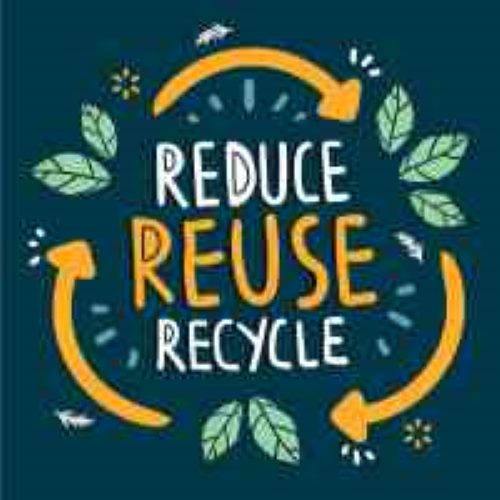
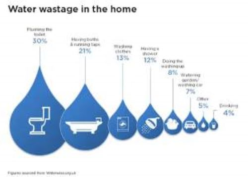

Sustainability Tips
-

Reduce, Reuse, Recycle
Reducing waste, reusing items, and recycling materials help reduce the strain on our environment. By recycling, we can minimize pollution, conserve natural resources, and reduce energy consumption. This is a fundamental step in achieving sustainability in our daily lives.
-

Use Energy-Efficient Appliances
Energy-efficient appliances consume less power, reducing greenhouse gas emissions and lowering energy bills. These appliances are designed to provide the same level of performance as standard ones while using less energy, making them more sustainable for long-term use.
-

Support Sustainable Brands
Supporting sustainable brands that prioritize environmental protection, ethical sourcing, and eco-friendly practices encourages companies to focus on sustainability. By choosing products from brands that value sustainability, consumers drive positive change in industries worldwide.
-

Reduce Water Consumption
Conserving water helps preserve this precious natural resource and ensures its availability for future generations. Simple actions such as fixing leaks, using low-flow fixtures, and reducing water waste in daily activities can make a significant impact in reducing water usage.
-

Opt for Renewable Energy
Switching to renewable energy sources such as solar, wind, or hydroelectric power reduces dependence on fossil fuels, lowers carbon emissions, and helps mitigate climate change. Investing in renewable energy not only benefits the environment but also supports the transition to a cleaner, more sustainable future.